Locally Scaled Neighbors
December 26 2024
Source:vignettes/articles/locally-scaled-neighbors.Rmd
locally-scaled-neighbors.RmdIntroduction
In their paper on Self-Tuning Spectral Clustering, Zelnik-Manor and Perona describe a method of local scaling to determining the affinity (similarity) between two data points. This is defined as:
where is the distance between points and , and and are local scaling factors for points and respectively. Previous methods had suggested empirically selecting a fixed value of for the entire dataset, whereas Zelnik-Manor and Perona suggest that there should be a per-point scaling factor, based on the local density around each point. To choose the local scaling factor, the authors suggest “studying the local statistics of the neighborhood” around each point. In their studies they use the distance to the 7th neighbor.
Although there is clearly a connection here between the local scaling factor and the perplexity parameter in t-SNE, this specific method was not used in dimensionality reduction until the introduction of TriMap where it was used as part of the weighting scheme in its triplet-based loss function, although the local scaling factor was modified to be the average of the 4th-6th neighbor distances.
Locally Scaled Nearest Neighbors
Later, PaCMAP adopted TriMap’s local scaling as a way of picking nearest neighbors rather than using the k-nearest neighbors directly. The rationale given in the paper is “the scaling is performed to account for the fact that neighborhoods in different parts of the feature space could be of significantly different magnitudes”.
Here’s how you do it:
- Select a number of neighbors
.
By default, this is determined based on the number of points in the
dataset, but is on the order of the UMAP default of
n_neighbors = 15. - Select a number of “extended” neighbors, . This is set to 50.
- Find the
nearest neighbors for each point. The
+ 1bit is to account for the fact that the self-neighbor is included in the nearest neighbor list (this is an implementation detail of the PaCMAP code and not explicitly mentioned in the paper but makes sense). - For each of the extended nearest neighbors, calculate the locally-scaled distances as with the same definition for as in TriMap. Once again, because of the self-neighbor, we need to use one more neighbor than mentioned in the paper, so in terms of UMAP, we actually use the average distance of the fifth-to-seventh nearest neighbors to define .
- Return the nearest neighbors based on the locally-scaled distances.
PaCMAP does not actually make use of the distances from the near neighbors, but the paper stresses that the scaled distances “are used only for selecting neighbors; they are not used during optimization”.
I am curious about whether using the locally scaled neighbors for UMAP neighbor graph provides any benefit, although the PaCMAP paper doesn’t mention them or their effect in any of the discussion of the method’s performance. Having to calculate an extra 50 nearest neighbors is a bit of a computational burden, and may have motivated why PaCMAP will warn you about a slow nearest neighbor search if you turn off the default PCA preprocessing step. However, calculating on the order of ~65 nearest neighbors, while more than a typical UMAP run, would be typical (or even a little low) compared to a t-SNE run.
Locally Scaled NN Implementation
Below is some code to generate a LSNN graph for use with
uwot. Use locally_scaled_knn to create it from
an input dataframe, e.g.
lsnn15 <- locally_scaled_knn(data, n_neighbors = 15, n_extra = 50, n_threads = 6)If you set nn_kind = "exact" you can get out the exact
nearest neighbors, but that will be slow.
If you already have a dense k-nearest neighbor graph of sufficient
size, (e.g. at least 51 neighbors per point), you can use
enn_to_lsnn to convert it to a locally scaled nearest
neighbor graph of size n_neighbors, e.g.
lsnn15 <- enn_to_lsnn(enn, n_neighbors = 15)You can then use it with UMAP like so:
umap_res <- umap2(data, nn_method = lsnn15)
locally_scaled_knn <- function(X,
n_neighbors = 15,
n_extra = 50,
scale_from = 5,
scale_to = 7,
n_threads = 1,
nn_kind = "approx",
ret_knn = FALSE,
verbose = FALSE) {
n <- nrow(X)
n_neighbors <- min(n_neighbors, n - 1)
enn <- extended_knn(
X,
n_neighbors,
n_extra = n_extra,
n_threads = n_threads,
nn_kind = nn_kind,
verbose = verbose
)
lsnn <- enn_to_lsnn(enn, n_neighbors, scale_from, scale_to)
if (ret_knn) {
return(list(lsnn = lsnn, knn = truncate_graph(enn, n_neighbors)))
}
lsnn
}
enn_to_lsnn <- function(enn,
n_neighbors,
scale_from = 5,
scale_to = 7,
n_extra = 51) {
enn <- truncate_graph(enn, n_neighbors + n_extra)
n <- nrow(enn$idx)
n_neighbors <- min(n_neighbors, n - 1)
lsdist <- locally_scaled_distances(enn$idx,
enn$dist,
scale_from = scale_from,
scale_to = scale_to
)
enn_sorted <- sort_knn_graph(enn, sort_values = lsdist)
lsnn <- truncate_graph(enn_sorted, n_neighbors)
lsnn <- sort_knn_graph(lsnn)
lsnn
}
extended_knn <- function(X,
n_neighbors = 150,
n_extra = 50,
n_threads = 1,
nn_kind = "approx",
verbose = FALSE) {
n <- nrow(X)
n_neighbors_extra <- min(n_neighbors + n_extra, n - 1)
n_neighbors <- min(n_neighbors, n - 1)
if (nn_kind == "exact") {
knn <- rnndescent::brute_force_knn(
data = X,
k = n_neighbors_extra + 1,
n_threads = n_threads,
verbose = verbose
)
} else {
knn <- rnndescent::rnnd_knn(
data = X,
k = n_neighbors_extra + 1,
n_threads = n_threads,
verbose = verbose
)
}
knn
}
# Zelnik-Manor, Pietro Perona. Self-tuning spectral clustering. In NIPS, 2004.
locally_scaled_distances <- function(idx,
dist,
scale_from = 5,
scale_to = 7) {
if (scale_to < scale_from) {
stop("scale_to must be greater than or equal to scale_from")
}
if (ncol(idx) != ncol(dist)) {
stop("idx and dist must have the same number of columns")
}
if (ncol(idx) < scale_to) {
stop("idx and dist must have at least scale_to columns")
}
sigma <- pmax(rowMeans(dist[, scale_from:scale_to]), 1e-10)
d2 <- dist * dist
# scale by sigma_i
d2_scaled_row <- sweep(d2, 1, sigma, FUN = "/")
# scale by sigma_j
sigma_j <- sigma[idx]
d2_scaled <- d2_scaled_row / sigma_j
d2_scaled
}
# if enforce_self_first = TRUE then we ensure that the first column of the
# returned graph is the self-neighbor, even if it ought to sort to a different
# position. knn graphs usually assume that the first column is the
# self-neighbor.
sort_knn_graph <- function(knn_graph, sort_values = NULL, decreasing = FALSE,
enforce_self_first = TRUE) {
dist_matrix <- knn_graph$dist
idx_matrix <- knn_graph$idx
if (is.null(sort_values)) {
sort_values <- dist_matrix
}
if (enforce_self_first) {
dist_col1 <- dist_matrix[, 1, drop = FALSE]
idx_col1 <- idx_matrix[, 1, drop = FALSE]
idx_matrix <- idx_matrix[, -1]
dist_matrix <- dist_matrix[, -1]
sort_values <- sort_values[, -1]
}
n <- nrow(dist_matrix)
k <- ncol(dist_matrix)
if (n != nrow(sort_values) || k != ncol(sort_values)) {
stop("dist_matrix and sort_values must have the same dimensions")
}
sorted_dist <- matrix(NA, nrow = n, ncol = k)
sorted_idx <- matrix(NA, nrow = n, ncol = k)
for (i in 1:n) {
ord <- order(sort_values[i, ], decreasing = decreasing)
sorted_dist[i, ] <- dist_matrix[i, ord]
sorted_idx[i, ] <- idx_matrix[i, ord]
}
if (enforce_self_first) {
sorted_dist <- cbind(dist_col1, sorted_dist)
sorted_idx <- cbind(idx_col1, sorted_idx)
}
list(dist = sorted_dist, idx = sorted_idx)
}
truncate_graph <- function(graph, k = NULL) {
if (is.null(k)) {
return(graph)
}
if (k > ncol(graph$idx)) {
stop("k is greater than the number of neighbors")
}
list(idx = graph$idx[, 1:k], dist = graph$dist[, 1:k])
}Datasets
See the examples article.
Results
Let’s compare default UMAP (with n_neighbors = 15) to
LSNN with n_neighbors = 15 picked from the 66-nearest
neighbors. As we are going to the effort of generating the 66-nearest
neighbors, let’s also see what UMAP with n_neighbors = 66
looks like.
UMAP results with n_neighbors = 15 on the left
(UMAP-15), LSNN results are in the middle and UMAP with 66
neighbors (UMAP-66) is on the right. The number in
parentheses after the dataset name is the degree of overlap of the
15-nearest neighbors between the two methods (0 means no overlap, 1
means all neighbors are the same).
| Dataset | UMAP-15 | LSNN | UMAP-66 |
|---|---|---|---|
| mammoth (0.90) | 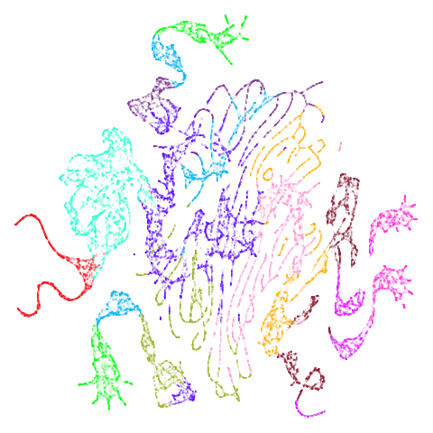 | 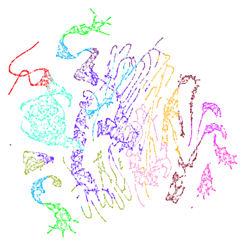 | 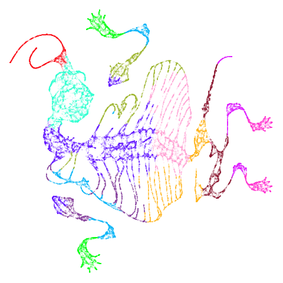 |
| scurvehole (0.92) |  |
 |
|
| isoswiss (0.92) | 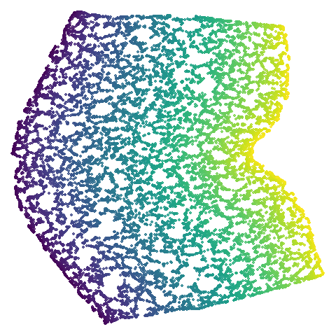 |  |
 |
| hierarchical (0.76) |  |
 |
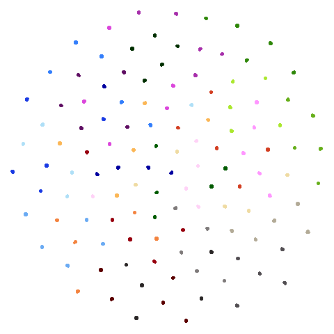 |
| spheres (0.84) |  |
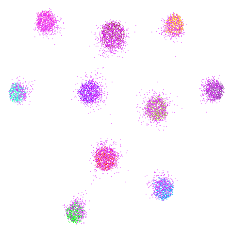 | 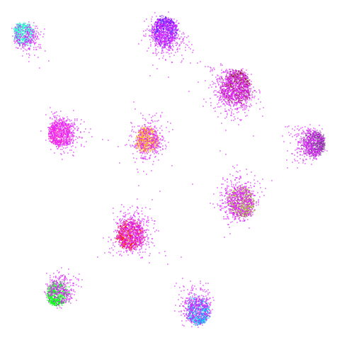 |
| coil20 (0.84) |  |
 |
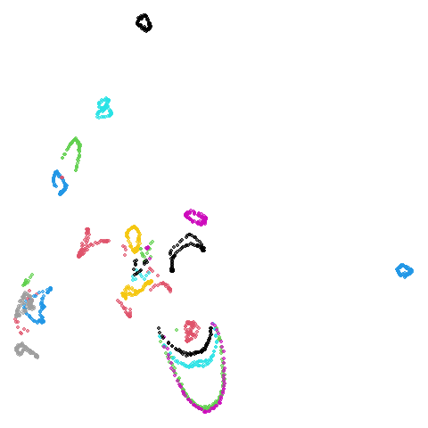 |
| coil100 (0.85) | 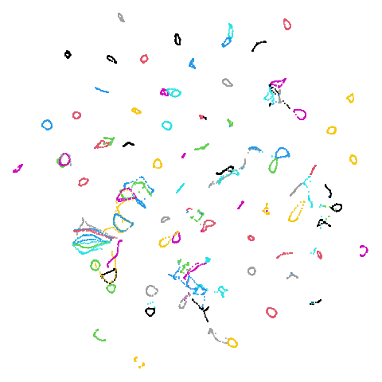 |  |
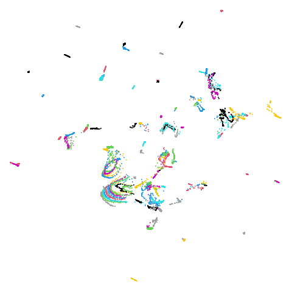 |
| macosko2015 (0.40) |  |
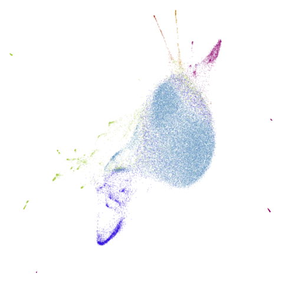 |  |
| macosko2015pca100 (0.66) |  |
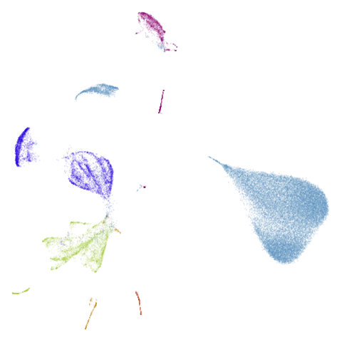 |  |
| mnist (0.76) |  |
 |
|
| fashion (0.69) |  |
 |
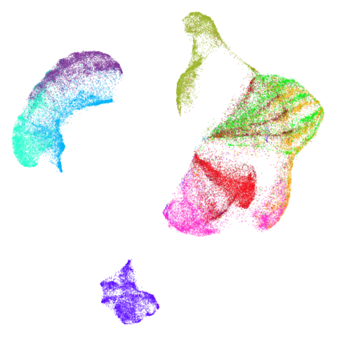 |
| norb (0.78) |  |
 |
 |
| ng20 (0.67) |  |
 |
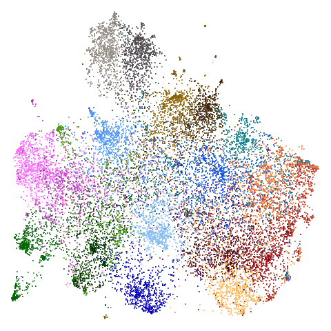 |
The average overlap is in the 77-78% range. Clearly, low-dimensional
datasets show the smallest difference in overlap, but higher
dimensionality doesn’t necessarily mean the lowest overlap:
coil100 has nearly 50,000 features, but has quite a high
overlap (0.84). macosko2015 (with 3,000 features) has an
anomalously low overlap at 0.40. Applying PCA to reduce the
dimensionality to 100 brings the overlap up to 0.66.
For all that, I don’t see a huge difference between the two results.
The clusters in mnist, fashion and
macosko2015pca100 are moved about a bit but not in a way
that would be the source of any revelations. Maybe the
mammoth and scurvehole results are a bit
better with LSNN?
fashion and ng20 have some outliers which
compresses the main body of the embedding into the center of the plot a
bit.
There are some intriguing signs in norb of better
clustering. I suspect this is related to the fact that
n_neighbors = 15 is probably a bit too low for this dataset
(see the norb
revisited section of the mutual nearest neighbors article for more).
The UMAP-66 results look the best here.
macosko2015 might also have something going on. The
smaller clusters are a bit more separated from the big cyan blob. The
effect is definitely much larger compared to the PCA-reduced version.
And the result is distinct from the UMAP-66 result.
Would you better off using n_neighbors = 66 for
everything? For some datasets it looks better (mammoth,
scurvehole, isoswiss a little bit,
norb as previously mentioned), but for coil20
and coil100 it looks worse, with less of the images being
separated into their circular clusters. For everything else, it’s pretty
much the same result as with n_neighbors = 15.